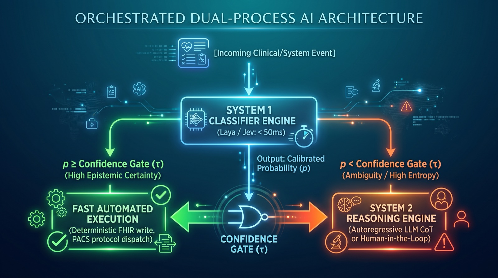

Separating System 1 from System 2 in clinical decision pipelines
Contemporary large language models perform fast pattern recognition and slow deliberation with the same autoregressive machinery, and consequently pay the cost of deliberation on every request. Two recently released systems, Jev (https://typesafe.ai) and Laya (https://github.com/NandhaKishorM/laya), separate the two by exposing fast, calibrated judgment as an explicit computational primitive. This post describes the theoretical basis for that separation, outlines an orchestrated architecture that exploits it, and reports an initial evaluation of Jev on note-level detection of protected health information (PHI) in synthetic clinical records.

Figure 1. An orchestrated dual-process pipeline. A single forward pass returns a calibrated probability; a confidence gate either commits to an action or escalates the case to serial deliberation.
Background: the dual-process account of cognition
Dual-process theory, as popularized by Kahneman in Thinking, Fast and Slow, holds that human judgment arises from two modes of processing. System 1 is fast, automatic, associative, and low-effort, and operates outside deliberate control; dodging an incoming object, reading a billboard, and recognizing an emotional expression are examples. System 2 is slow, serial, effortful, and rule-governed; multiplying 17 by 24, comparing two health insurance plans, and parking in a narrow space are examples.
It should be noted that Kahneman presented System 1 and System 2 as expository fictions rather than anatomically distinct modules, and that the dichotomy has been criticized within medical education research as an oversimplification of expert reasoning (1, 2). The distinction nevertheless remains useful as an engineering abstraction, and it is in that sense that I use it here.
In clinical medicine the framework was adapted by Croskerry into a model of diagnostic reasoning in which a recognized illness presentation engages the parallel, automatic processes of System 1, whereas an unrecognized presentation engages the slower analytical processes of System 2 (3, 4). The clinically important property of that model is not the superiority of either mode but the handoff between them: System 1 operates continuously at low cost and selectively triggers System 2.
The distinction is computational, not merely psychological
Machine learning practice has largely conflated the two modes, requiring a single autoregressive model to perform both. The cost asymmetry is substantial. To emit a short structured answer such as {"priority": "urgent"}, an autoregressive model must execute one sequential forward pass per generated token (a token is approximately 1 word), each pass traversing the full parameter set. An encoder-based classifier returns the same decision from a single forward pass by reading the logit distribution of a classification head directly; generation, and therefore the possibility of a fabricated answer outside the allowed set, is eliminated by construction.
The reported latencies differ by roughly an order of magnitude. The Laya repository reports 32.8 to 39.5 ms per question on a Tesla T4 GPU for a 421M-parameter ModernBERT-large checkpoint, falling to 7.2 ms per question when ten questions are batched, compared with a reported p50 of 236 to 276 ms for Jev (5). These are developer-reported figures for one model against a competitor and have not been independently replicated; they are cited here as an indication of magnitude rather than as a benchmark result.
Calibration: correcting the WYSIATI failure mode
A central claim of Kahneman's work is WYSIATI (What You See Is All There Is): System 1 reaches conclusions from immediately available associative evidence and generates high subjective confidence even when empirical accuracy is low. Standard large language models inherit a version of this flaw. Because they are trained on next-token prediction and subsequently tuned with reinforcement learning from human feedback, their verbalized assertions of confidence correlate imperfectly with ground truth; larger models can be well calibrated on multiple-choice formats, but preference tuning has been shown to degrade that calibration (6).
A probability is calibrated when, among all cases assigned probability p, the event occurs with relative frequency p:
P(Y = 1 | p̂ = p) = p for all p ∈ [0, 1]
Calibration of this kind is obtained by optimizing a strictly proper scoring rule, such as the Brier score or the ranked probability score, which is minimized in expectation only by the true probability (7, 8). The Laya documentation states that its checkpoints are trained by reinforcement learning against strictly proper scoring rules, with subsequent temperature fitting (5). The published TypeSafe documentation describes Jev's outputs as calibrated decisions but does not specify the training procedure, so for Jev the mechanism should be treated as a vendor claim pending disclosure. In either case the practical consequence is the same: the returned number is intended to be read as an empirical frequency rather than as a subjective confidence, and it should be validated on local data before it is trusted for local decisions.
The clinical relevance of this property is not new. Calibration has been described as the Achilles heel of clinical predictive analytics, because a discriminating but miscalibrated model can be actively harmful when its output is used to set an action threshold (9).
An orchestrated dual-process architecture
The arrangement shown in Figure 1 maps the cognitive handoff onto a production pipeline. Four steps are required.
1. Classify task typology. Assign pure categorization and gating decisions to System 1. Assign multi-constraint synthesis and free-form explanation to System 2.
2. Define the escalation boundary (τ). For a binary judgment, escalate when the returned probability falls in an indeterminate band, for example when 0.05 < p < 0.95; a value near 0.5 indicates genuine uncertainty rather than a moderate degree of the property being judged. For a multi-class judgment, escalate when max(p) < τ or when the predictive entropy H(P) = −∑i pi log pi exceeds a threshold θ. In either case, bypass automatic action and route the state to a System 2 model or to a human verification queue.
3. Audit latency budgets. Verify that the System 1 evaluation layer consumes a small fraction of the end-to-end latency target, on the order of 5% or less, which is achievable at the tens-of-milliseconds latencies cited above.
4. Enforce monotonic fallbacks. Ensure that the System 2 engine does not re-litigate structural assertions already settled by System 1, and reserve it for contextual resolution of the ambiguous cases that were escalated to it.
It is worth noting that the threshold is a policy parameter, not a model property. Different actions within the same system should be gated at different levels according to the consequences of an error, and the values should be fitted on local data rather than adopted from a vendor example.
A worked clinical example
Calibrated binary judgments are common in medicine, and arguably constitute the majority of the routine decisions embedded in clinical workflow. A medication order safety check illustrates the pattern:
from typesafe_sdk import Noul, TypeSafeClient
with TypeSafeClient() as client:
response = client.system_one(
state={
"patient_allergies": ["penicillin"],
"draft_order": "amoxicillin 500 mg PO TID",
},
questions={
"cross_reactive": Noul(
instructions=(
"Does this order expose the patient to a documented "
"anaphylactic or cross-reactive drug contraindication?"
)
),
},
)
if response.nouls["cross_reactive"].noul > 0.01:
route_to_pharmacist_review()
Two design points are worth making explicit. First, the question asks one narrow thing. A compound question that simultaneously asks whether an order is safe, free of contraindications, and appropriate without physician override returns a single number that cannot be attributed to any one of those conditions; independent dimensions should be posed as separate questions, which are evaluated in parallel in the same request. Second, the threshold is deliberately asymmetric. For a safety interlock the cost of a false negative greatly exceeds the cost of a false positive, so the threshold is set to escalate on any appreciable probability of harm rather than at the midpoint.
Evaluation: note-level PHI detection in synthetic records
Methods
I created a corpus of synthetic clinical notes and laboratory and imaging reports with known PHI spans, including synthetic but realistic patient names, medical record numbers, and dates. One thousand such notes were submitted to Jev with a single binary question asking whether the note contained PHI. I then randomly selected 500 of the 1000 notes and replaced every annotated PHI span with a type placeholder, for example PATIENTNAME in place of a name, and resubmitted the redacted versions. Notes retaining PHI were treated as positives (n = 500) and redacted notes as negatives (n = 500). Cases were classified at the default probability threshold of 0.50.
Results
Separation between the two classes was complete. All 500 PHI-positive notes were classified as containing PHI and none were missed; none of the 500 redacted notes were classified as containing PHI. Sensitivity was 100% (500/500; 95% CI 99.3–100%) and specificity was 100% (500/500; 95% CI 99.3–100%), with 0 false negatives and 0 false positives. Table 1 presents the distribution of the returned probabilities by class.
| Class | Notes (n) | Minimum | Median | Maximum |
|---|---|---|---|---|
| PHI-positive | 500 | 0.99 | 0.99 | 1.00 |
| Redacted | 500 | 0.11 | 0.20 | 0.45 |
Table 1. Distribution of the probability of PHI returned by Jev, by class. The two ranges do not overlap.
The lowest probability assigned to a PHI-positive note was 0.99 and the highest assigned to a redacted note was 0.45, a margin of 0.54. Any threshold between 0.46 and 0.98 therefore yields identical classifications, and the 0.50 default is not load-bearing for this corpus.
It is worth noting that the redacted notes were assigned probabilities of 0.11 to 0.45 rather than values near zero. This may be because placeholder tokens such as [PATIENTNAME] and [DATE] preserve the visible scaffolding of an identified record; the model appears to report residual identifiability rather than declaring the text clean. This behavior is consistent with a calibrated reading of the question, although the present design cannot distinguish it from a systematic offset.
Limitations
Several limitations constrain the interpretation of these results. First, the negatives were constructed by redacting the same annotations that define the positives, so the experiment measures whether Jev detects identifiers that were already known to the annotators, not whether it recovers identifiers the annotators missed. Second, the corpus is synthetic, and performance was not assessed on real clinical text with optical character recognition noise, inconsistent formatting, or institution-specific identifier conventions. Third, the task is note-level detection, which is substantially easier than the span-level detection and removal required for actual de-identification; the established shared-task systems are evaluated at the span level (10, 11). Fourth, no comparison against an established de-identification tool was performed (12). Finally, re-identification risk arising from quasi-identifiers that are not themselves listed identifiers, such as a rare diagnosis in combination with a small-population geography, cannot be scored by this corpus; that risk is precisely what separates the HIPAA Safe Harbor method from Expert Determination (13).
Discussion
Convolutional neural networks moved machine learning, and its application in medicine, forward by a large step. Transformers applied directly to image patches did so again (16). LLMs and autoregressive models were another. System 1 models may prove to be the next step.
In my brief evaluation, a non-generative classifier separated PHI-positive from redacted synthetic notes without error, with a probability margin wide enough that the decision threshold could be varied across more than half of its range without changing any classification. The result is best read as a sanity check on an easy version of the task rather than as evidence of de-identification performance, and the limitations above should be addressed before the approach is used on real records.
The broader claim is architectural rather than empirical. If a fast, calibrated judgment can be obtained in tens of milliseconds and its probability can be trusted as a frequency, at substantially lower compute cost, then the expensive reasoning model need only be invoked for the minority of cases that fall inside the indeterminate band. The economics of that arrangement are favorable, and the failure mode it addresses, confident and uncalibrated assertion, is the failure mode that has most consistently obstructed the deployment of language models in clinical settings. We are still in the early stages of determining whether Jev and Laya can deliver calibrated decisions of the quality their documentation claims. But this is clearly a technology that has great promise and I suspect we will see many evaluations in the near future.
References
- Rotgans JI. It is time to progress beyond the System 1 versus System 2 dichotomy. Perspect Med Educ. 2015;4(4):163–164. PMID: 26183249.
- De Houwer J. Moving beyond System 1 and System 2. Exp Psychol. 2019;66(4):257–265. PMID: 31530250.
- Croskerry P. A universal model of diagnostic reasoning. Acad Med. 2009;84(8):1022–1028. PMID: 19638766.
- Croskerry P. Clinical cognition and diagnostic error: applications of a dual process model of reasoning. Adv Health Sci Educ Theory Pract. 2009;14 Suppl 1:27–35. PMID: 19669918.
- Laya: multilingual, non-autoregressive System 1 decision engine. (https://github.com/NandhaKishorM/laya)
- Kadavath S, Conerly T, Askell A, et al. Language models (mostly) know what they know. arXiv:2207.05221. (https://arxiv.org/abs/2207.05221)
- Brier GW. Verification of forecasts expressed in terms of probability. Mon Weather Rev. 1950;78(1):1–3.
- Gneiting T, Raftery AE. Strictly proper scoring rules, prediction, and estimation. J Am Stat Assoc. 2007;102(477):359–378. (https://doi.org/10.1198/016214506000001437)
- Van Calster B, McLernon DJ, van Smeden M, et al. Calibration: the Achilles heel of predictive analytics. BMC Med. 2019;17(1):230. PMID: 31842878.
- Stubbs A, Kotfila C, Uzuner Ö. Automated systems for the de-identification of longitudinal clinical narratives: overview of 2014 i2b2/UTHealth shared task Track 1. J Biomed Inform. 2015;58 Suppl:S11–S19. PMID: 26225918.
- Stubbs A, Uzuner Ö. Annotating longitudinal clinical narratives for de-identification: the 2014 i2b2/UTHealth corpus. J Biomed Inform. 2015;58 Suppl:S20–S29. PMID: 26319540.
- Neamatullah I, Douglass MM, Lehman LW, et al. Automated de-identification of free-text medical records. BMC Med Inform Decis Mak. 2008;8:32. PMID: 18652655.
- US Department of Health and Human Services. Guidance regarding methods for de-identification of protected health information in accordance with the HIPAA Privacy Rule. (https://www.hhs.gov/hipaa/for-professionals/special-topics/de-identification/index.html)
- Guo C, Pleiss G, Sun Y, Weinberger KQ. On calibration of modern neural networks. Proc ICML. 2017;70:1321–1330. (https://arxiv.org/abs/1706.04599)
- Kahneman D. Thinking, Fast and Slow. New York: Farrar, Straus and Giroux; 2011.
- Dosovitskiy A, Beyer L, Kolesnikov A, et al. An image is worth 16x16 words: transformers for image recognition at scale. Proc ICLR. 2021. arXiv:2010.11929. (https://arxiv.org/abs/2010.11929)